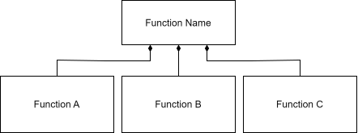

FRDL
Functional Reasoning Design Language, Version 0.7.1
Overview
FRDL stands for the Functional Reasoning Design Language, which is a graphical language for describing the functional architecture of a system. A functional architecture (often known as a functional model, functional decomposition, function-flow block diagram) describes the high-level functionalities (or, functions) that are to be embodied by a system, along with the interactions between these functionalities. Diagrams of functional architectures (like those enabled by FRDL) enable functional reasoning by providing a means to abstract away irrelevent aspects of system structure and behavior while focusing on the key (that is, functional) elements. Functional reasoning can support a range of design and analysis activities by encouraging clear reasoning about how a system operates and what it is supposed to do at a high level. This can facilitate many important design and analysis activities, including product design (and especially redesign), behavioral simulation, and hazard analysis.
What can you use FRDL for?
As a language, FRDL can be used to support a range of activities where functional reasoning can be helpful, and is thus meant as a drop-in replacement to many existing functional modelling languages (such as block diagrams, energy-materials-signals models, etc.). However, the main focus of FRDL has been improving hazard analysis through its explicit representation of behavioral interactions. In the context of hazard analysis, FRDL models can be used to identify potential causes and effects of hazardous conditions, by tracing the interactions between functions that could induce or be affected by these conditions.
Why FRDL?
FRDL was developed to improve the analytical rigor of the diagrams that analysts typically use to perform hazard analysis to better support causal reasoning. Compared to other languages, it has a few key features and advantages:
FRDL encourages functional reasoning, which is a key and long-appreciated part of hazard analysis. While existing hazard analysis approaches reccomend using a “functional” representations early in design, they often do not provide well-defined idea of what a “function” is, which can lead to confusion and ultimately poor reasoning. FRDL resolves this issue by providing a way of thinking about function which comports well with design-theoretic notions of function as well as the ethos that functions should have well-defined physical meaning.
FRDL encourages (or rather, requires) the consideration of behavioral interactions. These behavioral interactions are key for understanding both (1) how hazards in one part of a system can propagate to other parts and (2) how hazarous conditions arise in the first place. Without this explicit representation of behavioral interactions, analysts are left to either (1) use very simplistic reasoning based on what their models do represent (e.g., the assumption that if a function within another function fails, the containing function must also fail) or (2) rely on their own mental models of system behavior (which at the very least lack traceability and justification, and at the very most could be undetectably flawed).
FRDL offers a scalable representation of system complexity that enables the representation of diverse interactions in highly complex systems. Unlike other methods–such as block diagrams, which encode interactions as arrows, these interactions are represented in FRDL as nodes, making it possible to more scalably represent diverse interactions in a system that affect more than one function. This approach also encourages the grouping of like interactions, as well as the representation of wide-reaching interactions (such as communications or environmental conditions) in complex systems.
FRDL explicitly supports annotations to enable more detailed information to be used in analysis when it is available. Specifically, FRDL annotations can be used to better represent the dynamics of behavior (e.g., when functionality is active versus inactive) to inform the analysis of system resilience.
FRDL’s representation of system architectures aligns directly with the fmdtools simulation library, meaning that hazard models in FRDL can be directly implemented in simulation. This is an advantage over typical function-oriented simulation techniques, where the original functional model can look much different structurally than the simulation architecture.
Relationship with fmdtools
FRDL has been developed as a specification for fmdtools models, such that a functional architecture developed in FRDL can be directly implemented as an fmdtools FunctionArchitecture. While this correspondence is supported by the fmdtools data model, the display of these structures often veers from the FRDL specification (see: fmdtools.analyze.graph.style) due to limitations in the graphical libraries fmdtools uses to display architectures. Additionally, fmdtools does not currently support defining/displaying the annotations in frdl, showing only the graph structures instead. One of the development goals for fmdtools is thus to bring these features of FRDL into the library, as well as provide an interface for translating externally-supplied FRDL models into fmdtools Architecture classes.
Intro to FRDL
A helpful brief introduction to FRDL is provided in the Intro to FRDL presentation (download slides as pdf).
Specification
FRDL represents System Architectures by composing node and edge Primitives into an overall graph of system interactions with a defined Analysis interpretation.
Primitives
Primitives are the nodes and edges used to create Architectures, including:
Blocks

Blocks in FRDL are behavioral elements of the system, meaning they are expected to perform a given behavior. Behavior is any operation, such as an equation, modification, or constraint that the block imposes on the system. For example, Fly, Transfer Heat, and Set X to One may all be considered behaviors which blocks would embody. Blocks may further be annotated with Annotations to describe structural and behavioral properties of the block. FRDL supports three major block classes, shown above and described below.
Block draw.io shapes are defined here.
Components
Components refer to concrete parts that physically make up a system. These components may have multiple behaviors that interact in different ways. For example, an engine, a wheel, and a brake would all be different components of a car. Components may be used in the context of Component Architectures to represent the embodyment of a function in real-world parts. Components correspond directly to the fmdtools Component class.
Actions
Actions refer to discrete, logical steps preformed in controlling a system to accomplish an overall task. For example, Turn On/Turn Off and Turn Left/Turn Right are both actions that a user might perform on the system in order to use it. Actions are logical behaviors, and thus should be thought of as software (e.g., control logic) or human reasoning. Actions correspond directly to the fmdtools Action class.
Functions
Functions describe generic abstract functionality that the system is to be embody. As opposed to what a system “is” (e.g., a collection of parts), functions describe what a system “does.” Functions may be labeled as verbs acting on nouns (e.g., process ore into iron), verbs (e.g., navigate), or a set of tasks (e.g., store and supply energy). As primarily behavioral elements, functions can additionally be thought of as comprising one or multiple governing equations of the system. Functions correspond directly to the fmdtools Function class.
Because functions are hybrid elements, they can be embodied by physical components (see: Function/Action Relationship), logical actions (see: Function/Component Relationship), more elemental functions, and architectures.
Flows
Flows represent the means by which blocks may interact, and may be thought of as shared variables, inputs/outputs, or a shared environment. For example, in a circuit, electricity represents the flow between elements of the circuit.

There are three main types of flow, shown above. Base flows represent directly coupled links between functions (i.e., an aggregation), meaning that properties of the flow in one block directly correspond to the properties of the flow in another. Flows correspond directly to the Flow class in fmdtools.
Flows have additional variations, including MultiFlows and CommsFlows, described next.
Flow draw.io templates are defined here.
MultiFlows
MultiFlows are flows with some level of multiplicity, which may be used when blocks may have their own individual “views” of the flow. In other words, MultiFlow objects may contain multiple Flow instances with in itself, each of the same type or class. One block’s MultiFlow properties thus may not necessarily correspond to the properties of another block’s MultiFlow. MultiFlows correspond directly to the MultiFlow class in fmdtools.
CommsFlows
CommsFlows are MultiFlows that make up a communications network (or mesh) between different blocks. CommsFlows thus specify a given structure for sending/receiving flow properties to any or all other connected blocks. CommsFlows correspond directly to the CommsFlow class in fmdtools.
Relationships
Relationships are edges connecting nodes in a model graph that specify how nodes (blocks and flows) relate to each other. For the purpose of architecture modelling, FRDL relies on connection, activation, and propagation edges (shown below) to specify behavioral interactions. When used in a larger MBSE ecosystem (e.g. connected to UML or represented in fmdtools graphs), edges designed as a part of those ontologies can further specify a wide range of logical and behavioral concepts.
Draw.io templates for the relationship types are defined here.
Connection

Connection arrows (shown above) specify that a flow is to be considered jointly a part of two or more blocks. In doing so, the flow “connects” the blocks. This connection is equivalent to a shared association in UML/SysML, meaning that the flow is considered a part of all blocks it is connected to, but is not owned by any of them.
While connection arrows specify this joint connection, they do not in and of themselves specify a behavioral interaction between connected blocks. Instead they specify that a given flow is a means by which the blocks could interact.
Connections may be annotated with Connection Type labels (as shown) defining the relationship between the block and the flow, to be placed in the middle of the edge. They may also be (optionally) annotated with local flow names for the flow when used within the block, if needed, to be placed at end of the edge close to the block.
Activation

Activation arrows (shown above) specify that a condition in one block causes a condition in (or, “activates”) another block. Activation arrows can be annotated with text specifying the condition that causes the activation. Activation arrows can be used in Action Architectures to specify sequences of tasks that complete one after the other (similar to a activity diagram or finite state machine).
Propagation

Propagation arrows (shown above) represent the propagation of behavior between Blocks via Flows. In this way, propagation arrows represent the composition of Connection and Activation relationships, specifying both (1) the means by which blocks interact and (2) the specific conditions that cause activation (new or modified behavior or states) of the connected block or flow. Propagation arrows specify the directionality of propagation using two different conventions:
Unidirectional Propagation, which provides a single arrow in the direction of propagation. Conditions causing changes in behavior in the direction of the arrow may be overlaid on top of the arrow, while conditions which cause changes in the reverse direction of the arrow may be specified with an
(r)at the end of the text. This enables the tractable representation of coupled interactions where there is a defined sequence (e.g., energy flows in one direction from a battery to a light bulb) but interactions may flow in both directions (e.g., a bulb burning out cuts power use).N-Directional Propagation, which provides arrows in both directions. This convention can be used to specify polycentric behavioral interactions where there is not single obvious direction of flow (e.g., communications). In this convention, the direction of propagation is instead defined for each condition annotation using the convention shown above. When a condition in a block causes a propagation via the flow, it is written as
[Condition]>o, while a propagated condition in a flow that causes the activation of a block is written as(Condition)>[].
Annotations

Annotations may be used to clarify known properties of objects, such as blocks and flows. An overview of these annotations (described next) is provided above. While it is not required to use any of these annotations, they are provided as a part of the language to better inform analyses with relevant information.
Annotation draw.io templates are defined here.
Type Annotations
Type annotations help provide class information from the block or flow level which may help describe the block. Type annotations are especially relevant to Functions, where they can help explain the expected embodiment(s) of the function (e.g. <Battery> for a Supply Power function) and/or what is expected from the function. They may also be interpreted as references to classes which the object may inherit from or instantiate. These annotations may be placed immediately below the name of the object (block or flow).
Architectures
Architectures are compositions of Primitives that may be used to analyze the interactions between blocks. Architectures are used to represent the structure and interaction/propagation behavior of blocks via flows and activations.
A complete architecture diagram has:
A full accounting of Blocks of the diagram type (Function, Action, or Component) at the desired level of abstraction, with the appropriate Annotations desired for the analysis;
Flows that connect each of the functions, if any; and
Relationships (Propagation or Activation and Connection arrows) that relate Blocks and Flows with each other.
There are three major types of architectures–Functional Architectures, Action Architectures, and Component Architectures, described next.
Functional Architectures
Functional Architectures specify the interactions between the abstract functionalities (or, functions) to be embodied by the system. While functional architectures can be developed using a range of conventions, two major diagram conventions are provided for managing scope: The Function-In-Context Diagram and the Function Architecture Diagram described next.
Diagram Types
Function-in-Context Diagram

The Function-in-Context Diagram describes the system as a single function that interacts with a number of external functions representing the external socio-technical environment of the system. For example, in the above diagram, the function Function Name is controled by signal input via External Signals from Control Function Name and takes in Material and Signal flow inputs. It then produces External Energy (evacuated as waste) as well as an output material.
Function Architecture Diagram

The Function architecture diagram describes the decomposition of the overall system function into further functions. For example, in the above image, the function Function A produces Control Signal, which controls the energy supplied by Function B that in term modifies the material in Function C, which also produces a waste energy out flow.
Conventions
Functional Architectures can be represented using a range of conventions for representing behavioral interactions, depending on what is desired by the analysis. In general, the goal should be clarity, which, when there are many interactions, often means trying to represent each behavioral interaction with the minimum information required so as not to clutter the diagram. When there are few interactions, however, using a more detailed representation may be helpful for explaining an interaction in detail.
Diagram Example
Separate Connections and Activations
N-Directional Propagations
Single-Directional Propagations
Function-In Context Diagram
Function Architecture Diagram


The table above shows three different possible conventions for representing behavioral interactions using the relationships provided by FRDL, applied to two example architecture diagrams:
Separate Connections and Activations, in which the flow connections and activations are provided as separate arrows (rather than aggregated as combined propagation arrows). Generally, this representation is to be avoided unless the relationships are not possible to be represented with a propagation arrow, or there is a desired to show specific details that would not be clear otherwise. This approach is to be avoided because it creates many more opportunities for edges to overlap with each other, making a model difficult to read the diagram clearly as more blocks and relationships are added.
N-Directional Propagations, in which the edges are represented using N-Directional Propagation arrows. In general, this approach is to be avoided and instead N-Directional propagation arrows are only to be used for interactions that are truly multi-directional (e.g., communications or interactions with a dynamic shared environment). This is to avoid placing too many annotations on the diagram, which can make it difficult to read.
Single-Directional Propagations, in which the edges are represented using single-directional propagation arrows. This convention is more concise than the others, while preserving the same propagation information, and even the possibility for bi-directional propagations via the
(r)reverse propagation labels. This approach is thus preferred unless N-directional propagations are present or there are specific details about flow connections and activations that would be helpful to portray individually for communication purposes.
Action Architectures

Action architectures specify the sequence and interactions between logical actions performed by the system. They may be considered as similar to state machine diagrams as well as activity diagrams, except with the explicit specification of the means of interaction via flows. For example, in the diagram above, the system starts at Action 1, which affects Flow 2, then proceeds to Action 2 which modifies Flow 2, and then either (if Action 2 fails) proceeds to Action 4 followed by Action 1, or (if Action 2 Completes) proceeds to Action 3, which uses Flow 2.
In general, action architectures may be represented using separate connections and activations, rather than propagation arrows. This is because actions are meant to represent discrete events in which one action leads into the next (which activate based on sequence), rather than continuously-interacting functionality (which activate via physical constraints).
Component Architectures

Component architectures specify the interactions between components in a system. While component architectures can be modelled with a variety of conventions, in the FRDL methodology they are generally used to represent the interactions between components fulfilling a particular function (though more uses are possible). This is to help manage the complexity of interactions, since components (and component architectures) can fulfill a range of functions with complex, multidisciplinary behaviors that may be difficult to represent all on a single diagram. Instead, different component component architecture diagrams should be constructed for each function, which each show the component interactions involved in fulfilling that function. Then, the propagation behavior for component faults can be traced first to the immediate effects at each function level (where the component is present), and at the function architecture level across the system.
Usage
FRDL can be used to analyze behavioral interactions in a system, focusing mainly on the analysis of hazards. The procedure used to model and analyze hazards in a system using FRDL is described here.
Modelling
Modelling is meant to be an iterative process in which the model is developed and revised as information (e.g., behaviors, design decisions, elicited hazards) is elicited and modified. For a given architecture, the following procedure may be used:

In this approach, the modeller first identifies functions and flows, stitches them together with relationships, and then annotates them with detailed type, behavior, and propagation information.
Analysis of the model will often lead to refinement of the model. This is an important part of the modelling process in a couple ways:
First, analysis can uncover functions or interactions that were specified in ways that lead to fallacious results.
Second, analysis of specific scenarios can help the modeller identify functions, flows, and relationships (and details of each of these) that may not have been present in their initial mental model of the system.
As such, it is expected that analysis should lead to model refinement as a key component of ensuring that it achieves and maintains an acceptable level of analytical rigor.
Developing a Model Hierarchy
FRDL is meant to enable modelling activities to proceed throughout the system development process as the system becomes more detailed. The three tools for this are model refinement (described earlier), Annotations, and model hierarchy. A model hierarchy is a set of models that represent aspects of the same system at different levels of abstraction. These levels of abstraction enable the system design to include more detail over time, while keeping the same high-level representations needed to tractably understand and analyze the system as a whole.
At its most detailed, a model hierarchy will include:
A Function-in-Context Diagram (developed first) showing how the system will interact user(s) and the environment;
A Function Architecture Diagram (developed second) breaking the system into its high-level functions and showing the interactions between these functions;
Subsequent Function Architecture Diagram s needed to provide more detail for any of the high-level functions;
Action Architectures needed to specify the dynamic behavior of functions with logical behavior (e.g., users, operators, and control algorithms); and
Component Architectures needed to show how functions are embodied as well as the architectural details (e.g., redundancies, behaviors, etc.) used to achieve these functions
Analysis
FRDL can be used to analyze behavioral interactions to improve the understanding of system behavior and analyze hazardous scenarios. However, analyzing nominal scenario(s)–scenarios where the system is behaving as designed–can assist with model refinement, help catch design hazards, and support hazard analysis by giving one an idea of the system context (e.g., state and behavior information) of the hazards at particular times, phases, and states of system operation.
To analyze a nominal scenario, the procedure is to:
Begin at the starting block defined by the `Dynamics Tag`_ with a starting identifier.
Determine what the initial state, condition, behavior, and activity (active or inactive) of the block will be at the given time with its given conditions.
Run through conditions in the block that cause outgoing activations as well as propagations from the block to identify how this will affect other blocks.
Run through steps 2-3 for each of the active blocks.
Increment to the next meaningful time-step and run through steps 2-4 for the blocks with continuous behavior over time time-step.
End when all functions are inactive or at the ending time defined by the `Dynamics Tag`_ defined in the ending block.
The hazard analysis procedure builds on nominal scenario analysis by injecting hazardous conditions in the relevant model entities and seeing how these conditions affect the behaviors, states, and conditions of the system. The hazard analysis procedure is thus to:
Instantiate the hazardous condition or conditions in the relevant model entities (e.g., functions, actions, flows, etc.) at the relevant time(s) of interest to the scenario
Identify how the hazardous condition(s) will directly effect the entity (including modified behaviors, damage, harm, etc),
Determine how this conditions and its effects with propagate to entities connected via defined relationships,
Repeat steps 2-4 for all affected entities over time until the system wide effects have been exhaustively elicited. Note that while the hazard analysis procedure starts from a nominal analysis of the system, it may diverge significantly in terms of behavior, causing it to end at different times than originally specified.
These effects can be placed in the effects-related fields of a hazard table to support a wide range of hazard analysis processes (e.g., FHA, FMEA, etc).
FRDL may also be used to perform causal analysis for hazards to determine mechanisms by which a hazardous scenarios and conditions may arise. This procedure is to:
Identify the relevant block(s) where the hazardous condition is to arise.
Identify any causal factors related to the condition within the block.
Identify any flow or activation conditions which could cause those conditions to arise.
For each block that connects to the given flow or activations with the relevant conditions, determine whether a condition in the block could cause the condition, and, if so, run through steps 2-4 for the block.
Continue until the causes have been exhaustively explored and/or all of the remaining initiating conditions are at the system boundary.
These conditions and mechanisms may be placed in the causes and mechanisms-related fields of a hazard table.
Guide
The guide provides further guidance on Concepts underlying FRDL, its Correspondence with other methods, and Examples clarifying the use of FRDL.
Concepts
This section describes some relevant concepts for interpreting the FRDL ontology, including the
Function/Action Relationship

The relationship between functions and actions is illustrated above. Actions represent logical behaviors and are meant to live within the function(s) that control the system. These controlling functions thus contain or “own” the actions. As such, Action Architectures can be viewed as living within the functions that control the system (whether they represent operators, avionics, etc.).
Function/Component Relationship

The relationship between functions and components is illustrated above. Components represent the physical embodiment of functional behaviors, but do not always map directly to functions in a one-to-one manner. Generally, functions can be thought of as high-level behaviors (e.g., acceleration, force-balance, energy balance, etc.) and thus can involve a few different components when embodied. For example, supporting a payload may require a number of structural components, whose overall functionality would be defined using force balance equation(s) over entire assemblies. Conversely, the wheels of a vehicle (illustrated above) may contribute to a range of different functions, including supporting the vehicle, turning the vehicle, and moving the vehicle forward.
As such, components should not be viewed as being owned by functions, but aggregated by them. This shared aggregation relationship is the same relationship that flows have with functions, where components can be present in the definition of multiple functions, but are not owned by them.
Flows as Nodes

One of the unique features of the FRDL ontology is the representation of flows as nodes. As illustrated above, this is different than most other graphical languages (such as EMS models, function-flow block diagrams, SysML block and activity diagrams, STAMP models), which usually represent nodes as edges, rather than nodes.
FRDL represents the flows between blocks as nodes for a few reasons:
It enables flows to “live on their own” as objects that can be further broken down in terms of structure. In this sense, a flow can represent not only a specific condition that causes a change in a connected block, but the means by which the changes propagate, which may have its own structure (e.g., variables, values, sub-flows, etc.). When flows are represented as edges, these behavioral interactions may need to be specified in multiple places on the same diagram, leading to ambiguities (is a given flow arrow the same as a different flow arrow with the same label or a copy?).
This enables the conceptual separation of conditions which cause activation from the means by which activations propagate. This separation is helpful in the context of hazard analysis, where off-nominal interaction behaviors be entirely different than nominal interaction behaviors, but generally still use the same flow connections.
It enables the representation of complex interactions that take place between more than two blocks at the same time, such as communications and interacting in a shared environment.
It enables the scalable representation of multiple types of interactions to be represented on a single graph diagram, making it more possible to comprehensively represent these interactions in a tractable way that comports to analysis.
These properties of FRDL’s bipartite graph representation are illustrated in the example below.

As shown, the FRDL functional architecture (at left) has three flows connecting four functions (no propagation annotations are provided to keep the illustration generic). The equivalent unipartite representation of this architecture is (shown at right), and has nine flows connecting the functions. Because flows are not grouped, each function has more connections that must be tracked down during analysis (Function 1 has 5 arrows going out of it instead of 2 connections). This is further complicated by the fact that several of these flows are essentially duplicates connecting different pairs of functions, leading to ambiguities in practice, because it may be difficult to tell whether the flows are actually the same objects. Additionally, flow arrows cross twice instead of just once, meaning the representation becomes less clear as the number of interactions increase.
Correspondence with other methods
This section provides some comparison between FRDL-based models and similar models for hazard analysis in the literature. Source draw.io files for these diagrams are defined here.
Versus F/FA
The Fault/Failure Analysis Procedure defined in ARP-926C defines two types of diagrams which may be used in the context of “top-down” and “bottom-up” functional hazard analysis. To assist with “top-down” assessment, it provides the below diagram, in which the input and output functions (i.e., required and provided functionality) of a given function are listed at the left and right side of the function name. It further delineates types of functions to be input and provided. This is shown below, with the equivalent FRDL model.

As shown, these models represent the overall function of a system and its interactions with its environment somewhat differently. While the function-in-context diagram provides more definition of the high-level behavioral interactions the function has with its environment, the F/FA diagram provides more clearly outlines what is needed by the function and what it produces. However, the F/FA diagram goes no further than that and many of the details inherent to the FRDL model are left out, leading to potential ambiguities.
For “bottom-up” assessment, a Function-flow block diagram of the type shown is specified to be used for F/FA. This diagram uses function chains (functions connected via arrows) to specify whether functions are to be performed by the system in parallel (at the same time) or sequence (one after the other). An example is provided below (at left), along with a similar (but not equivalent) FRDL model (at right).

As shown, these models represent the internal behavior of a function in much different ways. In the F/FA model, functions are represented as sequential operations with unknown interactions and very primitive sequencing rules. In the FRDL model, on the other hand, the interactions between functions are specified as as flows connected by propagation arrows and thus there is less of a defined “order” to functions.
The important difference between these models is the somewhat different implications of the graphical representations on hazard analysis. In the F/FA diagram, order implied by flow arrows implies is that a failure in one function will cause a failure in a succeeding systems (or the high-level function represented by the diagram). This is a simplistic representation and interpretation of how behavior propagates in systems. For example, a water distribution system may have a set of functions that it performs on the water in a defined sequence, but failures later in the sequence could easily propagate to earlier functions. For example, a clogged outflow pipe may not only prevent water from being supplied, but it could also fill up and preceding storage tanks and potentially burst the pipes. This sort of behavioral propagation is well-suited for representation in FRDL-based functional architectures, because propagation arrows can imply bi-directional interactions between functions via flows.
Versus STAMP/STPA
The Systems-Theoretic Accident Model and Process (STAMP) is generic model of how accidents occur in complex systems, which has been developed in to the Systems-Theoretic Process Analysis (STPA) methodology for analyzing hazardous behaviors in systems. The key concept of STAMP is that accidents in complex engineered systems–by definition–occur because of failures in the control structure. As such, STAMP focusses on representing the control structure of complex engineered systems, as shown below (at left) with a similar (thought not necessarily equivalent) FRDL model (at right).

As shown, the generic STAMP model defines the system as a control structure in which the controller/operator performs control actions and receives feedback from a system it is trying to control. These interactions are shown via arrows. The FRDL method is compatible with this perspective because of its emphasis on dynamic behavioral interactions. However, there are some differences in the FRDL ontology that are worth noting:
First, FRDL is meant to be be applied to both the control of the system and its physical interactions. As a result, the technical functions of the system may further be decomposed, rather than solely representing the system as a control architecture. For example, in the above diagram Function B and C are listed as separate functions which STAMP might otherwise consider a single process, regardless of the potentially hazardous behavioral interactions between the functions.
Second, FRDL represents interactions as nodes rather than edges, which, as explained in Flows as Nodes, can enable a more scalable representation of many different types of system interactions. STAMP diagrams, on the other hand, can become difficult to make sense of at scale due to its edge-based representation of interactions.
Finally, FRDL’s annotations enable more detail to be represented about system behavior, which better enables the representation of system hierarchy/abstraction,
Generally, FRDL is proposed to support STPA-style analysis of system control structure while also enabling the analysis of the physical parts of the system. In doing so, it prevents model fragmentation as well as complexity explosion–instead providing a unified language that makes Developing a Model Hierarchy that is coherent and self-consistent possible.
Versus SysML/UML
The Systems Modelling Language (SysML) is language for representing system structure and behavior that has gotten a significant amount of traction within the model-based systems engineering (MBSE) community. As such, there have been efforts to apply hazard analysis in the context of SysML models since it is the goal of these diagrams to comprise the “definitive single source of knowledge” about a system. While FRDL aims to encourage MBSE, and may even be considered an annotated extension of the Unified Modelling Language (UML) which SysML is based on, the scope of SysML and FRDL are not necessarily complementary.
One of the challenges with comparing FRDL with SysML is that there isn’t necessarily a single use or methodology for representing systems for hazard analysis in the context of a SysML model. Generally (though not always), SysML models are applied to the system using component rather than functional information, meaning that hazard analysis is often more component-oriented than based on the notion of function. When functional abstractions are used, there is not always a consensus on how they should be applied (this paper provides some examples, though there are others). Nevertheless, the following shows a comparison between SysML Internal Block Diagrams and FRDL Functional Architectures, as well as SysML Activity diagrams and FRDL Action Architectures.
Functional Architectures Versus Internal Block Diagrams
The Internal Block Diagram (IBD) represented in SysML is provided below at left, along with an analogous FRDL functional architecture at right.

As shown, the internal block diagram is able to replicate the structure of the FRDL diagram fairly well, however, there are a few important differences:
The IBD represents flows as edges instead of nodes. As described in Flows as Nodes, this makes the representation prone to scalability issues as flows of the same instance go to multiple functions. While this is not a major issue in the architecture above, it can be when a wide range of interactions between many different functions need to be represented (which is often the case in complex systems).
From the perspective of behavioral analysis, the representation of interactions in the IBD is simultaneously over-constrained and ambiguous–with flows represented with a defined directionality that may not comport to the direction of system behavioral interactions. For example, the material flow is expected to go in a single direction through the physical process appied by Function C, meaning that the flow is given a single-directional arrow. This misses how (as represented in the FRDL model) if the material is not used (e.g., because it is jammed in place), this could cause behavioral interactions through that flow to the external system (e.g., by compressing the material or causing the material input stream to overload/spill). This representation of directionality additionally causes the signal flows to need to be broken into two to preserve the bidirectionality of interactions.
The IBD requires the use of proxy ports to specify that flows are a part of a block, which creates a number of redundant representations of flows that are not relevant for analysis at the system level. While the labels defined by these ports are helpful for defining flow types as well as providing some indicator of how the flows are referred to locally as opposed to globally, they do not necessarily add anything from an analysis point of view not already specified in the FRDL model.
While the FRDL model defines a rough execution sequence of the architecture via annotations, the IBD does not provide the means to do this, which can make it difficult to analyze the dynamics of function activation.
Action Architectures Versus Activity Diagrams
Below shows an FRDL Action Architecture (left) along with an analogous SysML Activity Diagram (right).

These representations of system logical behavior are quite similar. However, the main difference is that object flows in SysML are represented as edges, meaning that an object must be duplicated multiple times, even if it is the same object. This can make it difficult to trace out causal dependencies as easily as the FRDL Activity diagram, since it isn’t necessarily clear what object flows are to be interpreted as the same instance.
Versus Energy-Materials-Signals Models
The FRDL ontology and methodology is itself a descendent of research into using Functional Models for hazard analysis. Functional models used this research are known by a number of names in the literature, including Energy-Materials-Signals models, Pahl-Beitz Models, and Functional Basis of Engineering Design (FBED) models. Below provides a brief comparison between FRDL models and their FBED equivalents.
To represent the system at a high level, FBED reccomends to make a single-function diagram of the system with all energy, material, and signal inputs going in and out of the function (shown at left). FRDL aims to replace with the function-in-context diagram, shown below (at right), to better represent interactions between the functionality provided by the system and its operators and environment.

to represent the architecture of a system, FBED further reccomends decomposing the single function of the system into smaller functions (noun-verb pairs) and connecting functions via flows of energy, materials and signals. This is shown below (at left) with the equivalent function architecture diagram (at right).

As shown in the diagrams, while both methods enable the representation of interactions of high-level functionality via flows, there are a few major differences in the representation that are of note:
FBED flows imply a spacio-temporal order to functions that imply a sequence similar to that in F/FA diagrams. While this representation is better informed by flow information (which provides a means by which functions interact), it can be similarly deceptive because the flow of arrows may not necessarily imply the propagation of change. Additionally, this representation is ambiguous when representing time, especially in terms of differentiating between discrete and continuous interactions/behaviors (e.g., is the signal being sent out at the same interval/time as energy and material?).
Because FBED represents flows as edges, it is subject to the scalability issues described in Flows as Nodes.
FBED’s focus on energy, materials, and signals makes it difficult to represent composite objects that may not fit easily into each class.
FBED lacks the annotations that FRDL offers, meaning that it provides less depth in terms of representing system structure and behavior which may be used to inform analysis.
Further examples comparing FRDL-based functional architectures with EMS-based models are provided in Examples.
Versus Hierarchical Models
Finally, hierarchical functional decomposition diagrams are commonly used in practice to represent the breakdown of functions into sub-functions. These are often used for safety analysis, and are even used as references in the guide for the Functional Hazard Analysis in the SAE ARP4761A standard. These models are essentially the same as SysML Block Definition Diagrams (BDD), defining the logical structure of functions as including sub-functions which themselves may include sub-sub-functions and sub-sub-sub-functions. A comparison of these hierarchical models with an FRDL-based functional architecture is provided below.

{kind=link}
As shown, these representations of system architecture are very different. This is because the hierarchical model lacks any notion of behavior, flows, or any definition of behavioral interactions. Instead, we are merely shown that sub-functions are included within the logical definition of the overall function. While this can be helpful for navigating multiple levels of decomposition, it does not provide much information that could directly inform analysis. In fact, when interpreted literally, the model often provides an overly-simplistic idea of how failures arise, in which failures in a sub-function are expected to be failures in the overall function. However, this notion leaves out important concepts like behavioral interactions as well as the ability for functions to compensate or control for each other in various ways (e.g., as redundancies).
FRDL-based models, on the other hand, only show one level of functional abstraction at a time in order to represent the details of behavioral interactions that arise between functions. This makes them both a compatible and complementary type of diagram to the hierarchical decomposition diagram, since they fundamentally represent different things–with the hierarchical decomposition showing the logical composition of a function hierarchy and the FRDL functional architecture showing the behavioral interactions between functions at a single level of hierarchy.
Examples
Below are some examples that illustrate some basic FRDL modelling concepts.
Bread Making
To illustrate how FRDL can better clarify the dynamic behavior of a system in the context of analysis, consider the process of baking bread. The source draw.io file for this example is provided here. In a typical EMS-based failure model, the designer may represent the system with the following structure.

The behavior of this model, as noted in the diagram, is ambiguous because it is not clear whether the process is continuous or discrete. In the discrete interpretation, a baker may place a single loaf of bread in the oven, after which they take the bread out. As a result, we can assume that (in the context of failure propagation), if there is a failure to break bread, the main effect will be that the bread to be exported will be unbaked. This well-represented in the spacio-temporal representation of how flows connect flows. In the continuous interpretation, on the other hand, the dough is continuously placed on a conveyor belt that moves the bread through the oven and exports it when it has been baked. As a result, in the context of failure analysis, if there is a failure to bake bread (caused, for example, by a loss of power to the unit), we may also not be able to import bread and incoming dough may be stopped prior to entering the oven.
In FRDL, these two interpretations would lead to models with different propagation arrows as well as flow tags. The discrete case would be represented as shown below:

As shown, this model is specified with dynamics tags that specify that:
The behavior starts with importing dough, which activates the
bake bread from doughfunction when the dough is ready;The
bake bread from doughfunction in turn draws electricity from theImport EEfunction in the form of current until it is done;When the loaf is bread, it activates the
Export Breadfunction, ending the scenario.
As a result, a failure in the Bake bread from dough function could lead to uncooked dough being exported, the baking never finishing (and thus bread never being exported), and/or adverse current draw, depending on the specific fault mode.
In contrast, the continuous case would be represented as shown below:

While the structure of this model is similar to the previous flow, the interpretation is quite different because of the separated dough/bread flows as well as the different dynamics tags and propagation arrows. Specifically, this model specifies that:
The behavior once again starts with the
Import Doughfunction, except that this function remains active until the end of the scenario, representing the continuous importing of bread.The
Bake Bread from Doughfunction is initially activated by dough being put in the function, and now receives more bread whenever it is ready for more dough. It also is represented as active until the end of the scenario.When bread is ready from the
Bake Bread from Doughfunction, it leaves the function and gets exported, activating theExport Breadfunction. This function ends the scenario after 100 time-steps.
As a result, a failure in the Bread bread from dough function could not only lead to uncooked dough being exported (as well as the other effects for the discrete case), it could also lead to a blockage of incoming dough, which could ruin the batch if not attended to.
For example, consider the failure condition of a stuck conveyor, shown below in the continuous model.

The analysis of causes and effects are shown below:
Effects Analysis
For the first step of effects analysis, the potential effects on flows are identified as shown below:

As shown, there are potential effects for each flow–both expected (change in flow of bread/dough) and potentially unexpected (adverse current draw).
For the second step, the effects on function behaviors are identified:

As shown, this gets us to the system boundary of the model in terms of input/output functions. We can also identify some some effects to the instantiating function from the passing of time (dough likely to burn).
This process can continue as long as there are more potential effects to uncover. We continue tracing the effects for one more step below:

As shown, if the electricity draw is too high, a circuit would be blown, which would essentially stop the machine.
One thing to note is that the more of these steps are undergone, the less directly plausible the effects are expected to be–in this case the effect of “elements turned off” relies on the circuit being blown, which itself relies on the current draw being high enough to blow the circuit. It is thus important to keep track of these sorts of assumptions as the analysis is performed, so there is an idea of which effects are more or less likely/plausible.
Causal Analysis
For the first step of causal analysis, the potential effects on flows are shown below:

As shown, causes are identified for each flow. We can note the plausibility of these causal mechanisms (dough jamming seeming less likely than a power supply cut).
For the second step, these causes can be further traced to functions:

This is about as far as the analysis can go for causal analysis with this diagram. That said, many more potential causes (and effects) could be delineated if the Function-in-Context Diagram shown here was further broken up into a Function Architecture Diagram, since more details about how the conveyor works would be provided.
Summary
The results of the FRDL-based hazard analysis procedure for the “Short” condition are shown below.
Function |
Failure Condition |
Effects |
Causes |
Bake Bread from Dough |
Mechanical Conveyor Stuck |
Adverse current draw, potential to blow circuit and shut off conveyor Dough not moved in, causing blocked production and potential to overflow input Bread not moved out |
Power supply cut from power line Dough jamming conveyor, adverse dough consistency Bread blocking conveyor, piled up loaves at export |
Circuit
To illustrated how FRDL can better represent coupled technical behaviors in conventional engineered systems, this section provides an example of representing an electric power system. The source draw.io file for this example is provided here. An EMS-based model of this system could look as shown below:

As shown, the goal of this system is to regulate the supply of electrical energy, which it exports from the Export EE function to external loads. In the process, some of the electrical energy is converted into waste heat. Because this model applies the spacio-temporal view of functional flow inherent to the EMS, representation, reasoning about failures using the direction of the arrows could lead to incorrect or incomplete results. For example, in the fault scenario in which there is a short in the Store EE function, the shown graph implies that the electrical energy output would degrade, meaning that EE can no longer be modulated and exported to external electrical loads. This leaves out that the short in the Store EE function would also cause adverse current draw, from the Import EE source, which could damage the upstream source and wiring.
In contrast, an FRDL function architecture diagram of this system is shown below.

As shown, this model provides more detail about how the flow of electricity propagates behaviors throughout the system. In particular, both the forward flow of voltage from the source to the sinks and the reverse flow of current from the sinks to the source are provided. Similarly, there is now a more informed representation of the dynamics of the system–that the functions are activated and deactivated by the new voltage applied initially by the Import EE function. Thus, analyzing a short in the Store EE function in this model would lead to a more-informed idea of how behavior would propagate in the circuit–not just propagating forward (via the voltage activations) to degrade the supply of electricity to the load, but also propagating backwards via current activations.
Below this is illustrated in the hazard analysis of a short in the “Modulate EE” function, shown below:

The next subsections show how the FRDL-based hazard analysis procedure can be used to analyze the effects and causes of this hazard, resulting in a summary capturing the corresponding hazard table information.
Effects Analysis
In the first step of the analysis procedure, the effect on flows is evaluated:

As shown, the output of “Modulate EE” produces no voltage, since the power is now moving through the “Modulate EE” function. This further results in increased current draw though the power input.
In the second step, further effects on functions are evaluated:

As shown, the high current draw can cause a depletion of energy storage, as well as a burn-out of the upstream power supply. It also results in a lack of electrical energy exported.
This results in further changes to electricity flows, shown below:

As shown, because the upstream circuitry has been burnt out, it no longer provides voltage.
This results in further downstream effects, combined in a single diagram below for brevity:

Causal Analysis
The causal analysis for the circuit is much simpler. The first step is shown below:

As shown, the main identified flow effect is too high of voltage being applied, causing increased heat from the underlying component, resulting in the circuit melting and their being a short.
This condition is further propagated in step 2, below:

As shown, the increased voltage can result from too high of a voltage input to the entire circuit, or the voltage being provided from the “Store EE” function at too high a level. This causal analysis was fairly simple, but it shows some potential flaws in our model–we predict that the “Modulate EE” function could heat up or down depending on its current draw, but the only heat moving through the model is exported from the “Convert EE to HE” function.
If these functions are co-located, it is likely that heat could additionally flow between them, resulting in similar faults throughout the system. It could also be the case that this heat is adequately evacuated effectively via the “Export HE” function, heat-related short faults. Addressing this could mean adding more heat flows to support the analysis, an exercise that is left to the reader.
Summary
The results of the FRDL-based hazard analysis procedure for the “Mechanical Conveyor Stuck” condition are shown below.
Function |
Failure Condition |
Effects |
Causes |
Modulate Electricity |
Short |
Voltage out reduced (likely to zero), meaning no EE exported High current draw, draining the “Store EE” function and blowing upstream fuse Said blown fuse reduces input voltage to zero, resulting in an open circuit |
Input voltage too high (from source or battery) |
As shown, an array of effects were identified using the procedure, as well one main cause.
Further Examples
Further examples are provided in the fmdtools examples repository (see Examples). The fmdtools library uses an adaptation of FRDL to represent the structures of simulation classes (see fmdtools.analyze.graph.style). As such, architecture visualizations in the examples repository can be readily interpreted as (un-annotated) FRDL models. Additionally, one goal of the examples repository (in progress) is to provide fully-annotated FRDL diagrams to help describe each model.